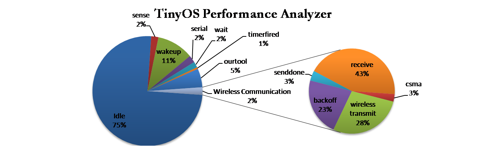

Author: Mohamed Moubarak
TinyTune is a performance analyzer for TinyOS 2.x. It follows the statistical profiling approach to take a snapshot of the system at each interval. The tool runs regardless of the running application and regardless of the location of the node which means that a node can be monitored while it is deployed in a real life application. It does so using a revolutionary technique. The tool can pinpoint runtime bottlenecks, memory bottlenecks, and a whole range of metrics. The tool will also be able to alert the programmer if his/her code does not conform with some of the "TinyOS Programming Hints" found in the document TinyOS Programming by Philip Levis. The developer requires no knowledge other than his/her application and the tool itself is extendible.
Dec 24 2008
Code added to tinyos-2.x-contrib
Under Construction
Under Construction